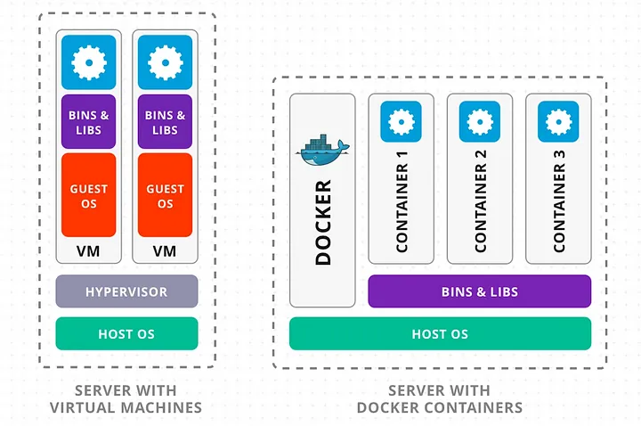

Menu
A comparação entre Docker e Máquinas Virtuais (MVs) envolve diferenças fundamentais na maneira como cada tecnologia gerencia o isolamento de aplicações e o uso de recursos do sistema.
Arquitetura das Máquinas Virtuais
As Máquinas Virtuais operam sobre um hipervisor, que permite a execução simultânea de múltiplos sistemas operacionais sobre um mesmo hardware. Cada MV possui seu próprio kernel, sistema de arquivos, bibliotecas e dependências. Isso garante isolamento completo, mas com um custo alto em termos de desempenho e consumo de recursos (KUMAR; SHARMA, 2017). O tempo de inicialização das MVs é relativamente elevado, e a densidade de instâncias por servidor físico é limitada.
Eficiência e Leveza dos Containers Docker
O Docker, por sua vez, utiliza uma abordagem de contenção baseada no compartilhamento do kernel do sistema operacional do host. Cada container contém apenas o necessário para a aplicação funcionar, como bibliotecas específicas e arquivos binários. Isso reduz consideravelmente o uso de CPU, memória e armazenamento, além de permitir inicializações quase instantâneas (DUPCLOUD, 2024).
Portabilidade e Facilidade de Implantação
Outra vantagem do Docker é a sua portabilidade. Como os containers encapsulam todas as dependências da aplicação, eles podem ser executados em qualquer ambiente compatível com Docker, sem a necessidade de configuração adicional, o que não é trivial em ambientes com MVs.
Limitações dos Containers e Papel das MVs
No entanto, o Docker não substitui completamente as máquinas virtuais. Em cenários onde é necessário executar sistemas operacionais distintos ou quando há requisitos de isolamento extremamente rigorosos (como em ambientes multi-tenant sensíveis), as MVs ainda são a escolha mais adequada.
Abordagem Híbrida: O Melhor dos Dois Mundos
Segundo a AWS (2024), uma combinação de ambas as tecnologias pode ser vantajosa, utilizando VMs para fornecer camadas de isolamento seguras e Docker para empacotar e escalar aplicações de forma leve e flexível. Essa abordagem híbrida é cada vez mais comum em arquiteturas modernas.